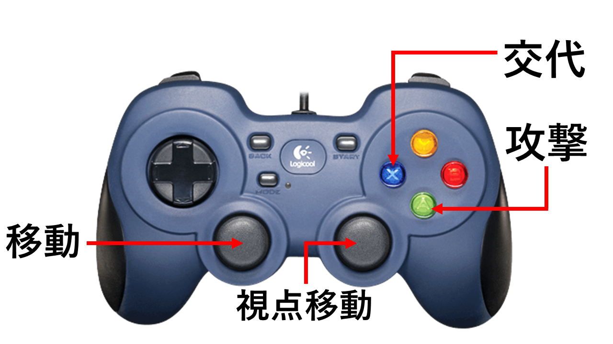

「筋肉防衛」ポートフォリオ
河原電子ビジネス専門学校 ゲームクリエイター科2年
氏名：城ノ戸 翼
目次
1. 作品概要
-
タイトル
-
学校
-
制作人数
-
製作期間
-
ゲームジャンル
-
プレイ人数
-
対応ハード
-
使用言語
-
開発環境
-
エンジン
-
プログラム
-
3Dモデル
-
エフェクト
-
画像
-
Adobe Photoshop
-
Procreate
-
バージョン管理
-
タスク管理
-
GitHubURL
- https://github.com/tsubasa25/MuscleDefense
-
備考
- 第10回ゲームコンペティション「プレイアブル部門」に応募
紹介動画
2. 操作説明

3. 担当ソースコード
-
3.1. エンジン部分
* AnimationClip.cpp
* (16行目~ResourceBankManager追加)
- Material.cpp
- (InitTexture関数で各テクスチャのリソースを最適化)
- (頂点モーフ用の頂点情報を追加)
- (シェーダーのリソースを最適化)
- Material.h
- (リソースを最適化するにあたり、Texture型の変数をポインタに変更)
- Model.cpp
- (モデルのリソースを最適化)
- (Draw関数を複数のカメラに対応)
- Model.h
- RenderContext.h
- Skeleton.cpp
- TkmFile.cpp
- (Load関数でガリガリのモデルと、ムキムキのモデルを読み込みするように変更)
- GameObjectManager.cpp
-
3.2. ゲーム部分(.cpp,.h)
- DirectionLight.cpp
- DirectionLight.h
- EnemySEManager.cpp
- EnemySEManager.h
- FontRender.cpp
- FontRender.h
- GaussianBlur.cpp
- GaussianBlur.h
- LughtManager.cpp
- LughtManager.h
- PointLight.cpp
- PointLight.h
- PostEffectManager.cpp
- PostEffectManager.h
- SkinModelRender.cpp
- SkinModelRender.h
- SpotLight.cpp
- SpotLight.h
- BackGround.cpp
- BackGround.h
- Enemy.cpp
- Enemy.h
- EnemyAnimation.cpp
- EnemyAnimation.h
- GameScene.cpp
- GameScene.h
- GoldGym.cpp
- GoldGym.h
- HUD.cpp
- HUD.h
- Level3D.cpp
- Level3D.h
- main.cpp
- Map.cpp
- Map.h
- MapChap.cpp
- MapChap.h
- NaviMesh.cpp
- NaviMesh.h
- Path.cpp
- Path.h
- PathFinding.cpp
- PathFinding.h
- PhysicsGhostObject.cpp
- PhysicsGhostObject.h
- Player.cpp
- Player.h
- PlayerAnimation.cpp
- PlayerAnimation.h
- PlayerVoice.cpp
- PlayerVoice.h
- ResourceBanckManager.cpp
- ResourceBanckManager.h
- ResultScene.cpp
- ResultScene.h
- Sky.cpp
- Sky.h
- SoundEngine.cpp
- SoundEngine.h
- SoundSource.cpp
- SoundSource.h
- SpriteRender.cpp
- SpriteRender.h
- stdafx.cpp
- TitleScene.cpp
- TitleScene.h
- TknFile.cpp
- TknFile.h
- WaveFile.cpp
- WaveFile.h
- WaveFileBank.cpp
- WaveFileBank.h
- WipeCamera.cpp
- WipeCamera.h
-
3.2. ゲーム部分(.fx)
- model.fx
- postEffect.fx
- shadow.fx
- Sky.fx
- sprite.fx
4. 技術紹介
4.1. 頂点モーフによる筋肉の表現
私が考えるこのゲームの最大の特徴は、筋肉を鍛えて、身体が大きくなることであり、筋肉の肥大をどう表現するかが、制作をする上で最初の壁でした。
最初に実装したのは、モデルのボーン情報の拡大率を変化させる方法でした。

この方法だと、筋肉が大きくなるにつれ、モデルが崩壊していきます。
そこでムキムキモデルとガリガリモデルを用意して頂点を線形補間させていく方法に切り替えました。
(3dsMaxでのモデルデータ)
(頂点モーフのイメージ)

頂点モーフの実装により、モデルが崩壊することなく、よりリアルな筋肉の表現をすることに成功しました。
上腕の筋肉を大きくしたい場合は、上腕の骨に関連づいている頂点のみモーフしています。このようにすることで、部位ごとの頂点モーフを実現しています。

4.2. 敵の大量表示
迫りくる大量のゾンビたちが、このゲームのもう１つの特徴としてあります。
しかし、初期の段階ではゾンビを10体出すだけで、FPSは15程度に低下し、ゲームを遊ぶどころではなくなっていました。
問題点を洗い出していくと、多くの改善点が挙げられました。
RenderDocを利用して、描画コマンドを確認して、無駄なドローコールがないかを確認したところ、敵が映らないワイプ用のカメラにまで表示してしまっていたので、メインカメラのみ表示するように改良しました。
さらに、カメラ外の敵の表示を削減するために、視錐台カリングを実装しました。
(視錐台カリングのイメージ)
さらに、RenderDocを利用し、Meshビューワーを確認して、モデルの頂点数を調べたところ、敵の頂点数が多く、それがボトルネックになっているのではないかと推測しました。
そこで、試しに敵の頂点を少なくすると処理負荷が大きく下がったので、頂点数の削減を行いました。
25000頂点あったモデルを5500頂点まで削減しました。
(3dsMaxでのゾンビモデル)
ボトルネックであったこれらの問題を解決し、200体の敵を出しても問題なくゲームがプレイできるようになりました。

5. こだわったところ
文章は1度に出すのではなく、音と同時に1文字ずつ表示しています。

ゲームスタート時に、各拠点の紹介(鍛えれる筋肉)と、ステージの紹介を兼ねて、カメラの座標に経路探査のパスを入れて移動させています。

大量に敵が現れるため、SEが重なり、音割れが起こることが多々ありました。
そのため、シングルトンパターンで作成したEnemySEManagerで敵のSEの最大発生数を定め、管理できるようにしました。
プレイヤーの攻撃の3発目に波紋状に衝撃波が出るようにしました。
当たり判定には、ボックスコライダーを使い、ボックスが徐々に大きくなります。
3発目を打った後はスキが大きいので敵に囲まれないようにする必要があります。